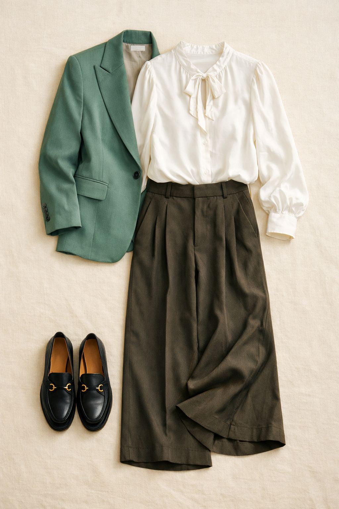
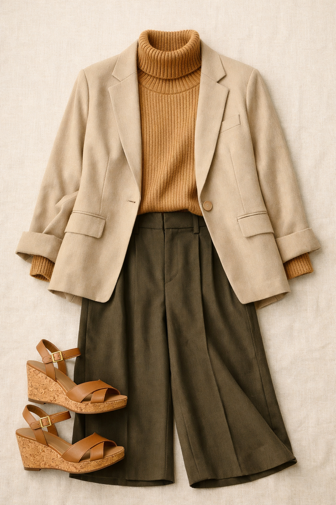
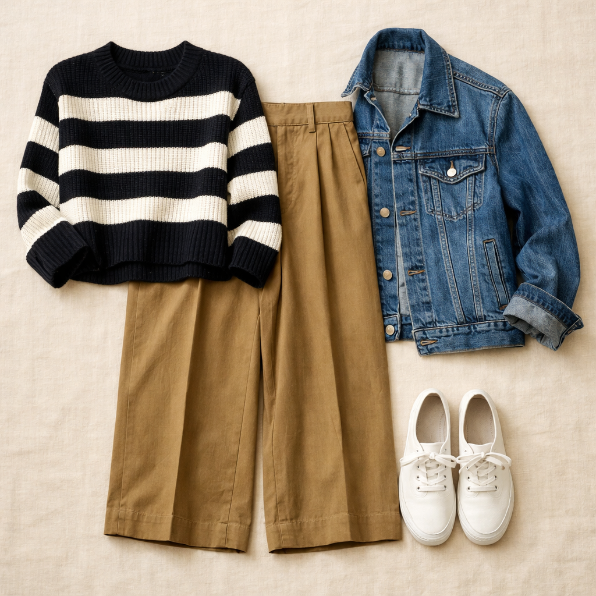

Banana Republic
Everyday Wide-Leg Pant
$78
Warm earthy khaki in TENCEL™-cotton blend — buttery soft with a polished drape. At 33.5" inseam these are genuinely tall-friendly, and they're machine washable. A rare find at this price point.
Shop NowWhy This Pick
Warm earthy khaki that pairs with almost everything in the wardrobe — from crisp white blouses to chunky stripe sweaters. The TENCEL-cotton blend looks elevated but goes in the wash, and the generous inseam means no hemming required.
3 Ways to Wear It
Styled with pieces already in your closet

Look 1 — Earth-Toned Executive
White Daniel Rainn blouse (#01) + Sage/teal blazer (#205) + Black Franco Sarto loafers (#520). The white blouse keeps it crisp, the sage blazer pulls out the green undertones in the khaki, and the black loafers ground the whole look with authority.

Look 2 — Soft Power Monday
Camel/tan turtleneck (#76) + Light tan/beige blazer (#208) + Tan cork wedge sandals (#514). Tonal warm neutrals head to toe — khaki, camel, beige, tan. Effortlessly chic monochrome that reads expensive without trying.

Look 3 — Casual Friday Cool
Black/white stripe 41 Hawthorn sweater (#63) + Denim trucker jacket (#211) + White Keds (#510). The graphic stripe adds energy to the warm khaki, the denim jacket keeps things relaxed. Friday done right.